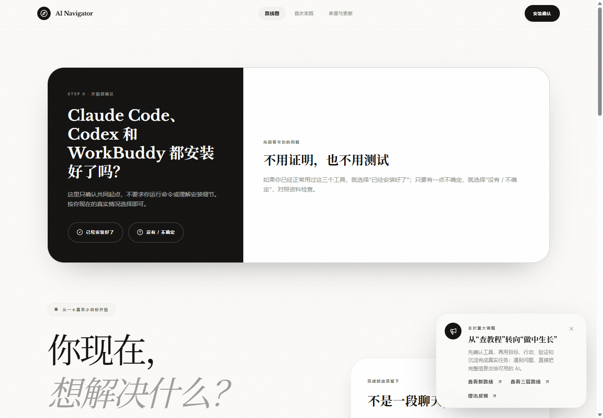
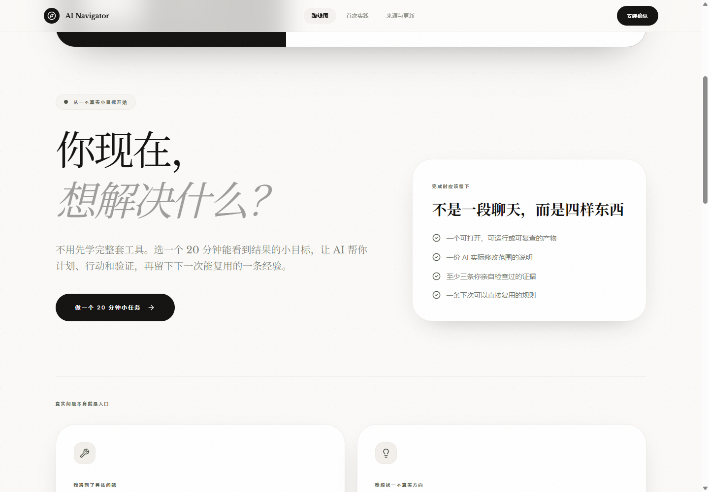
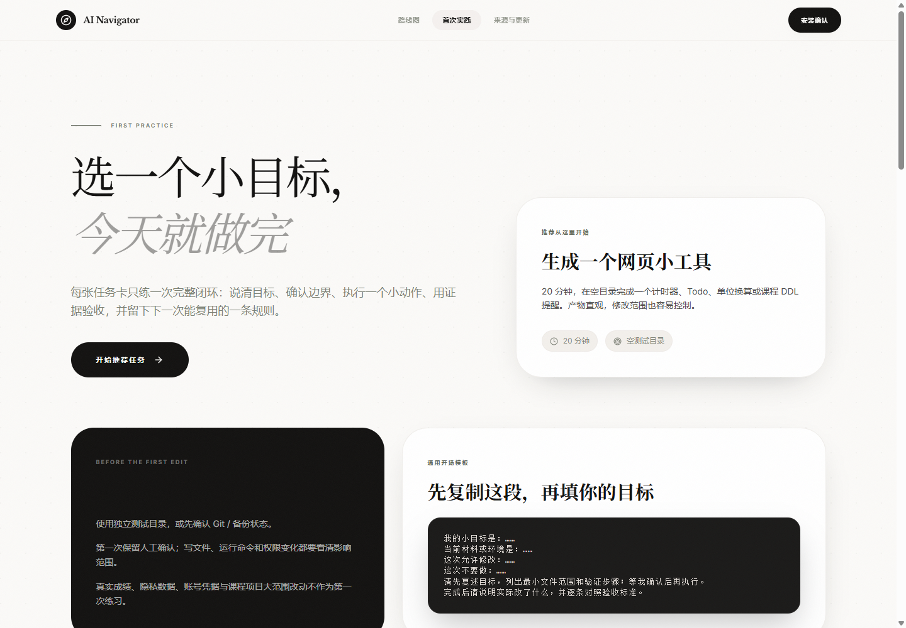
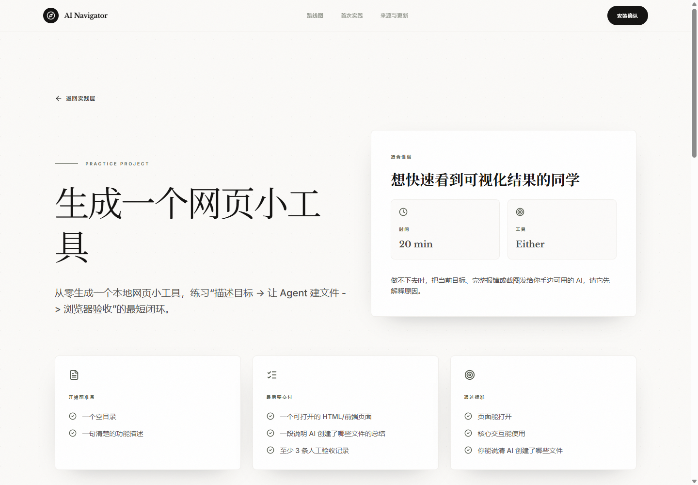
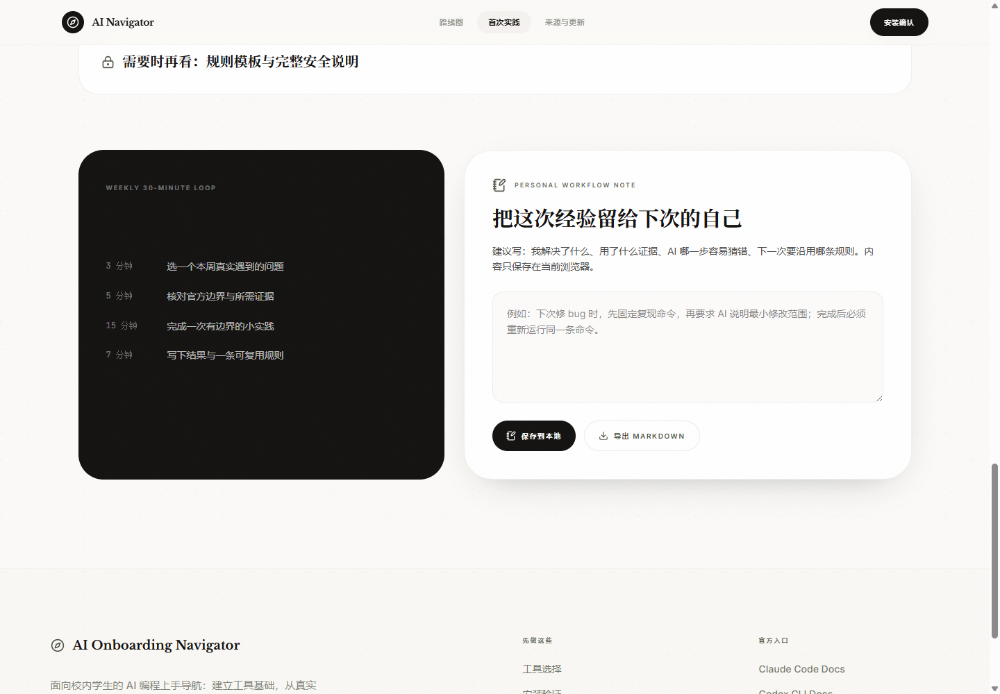
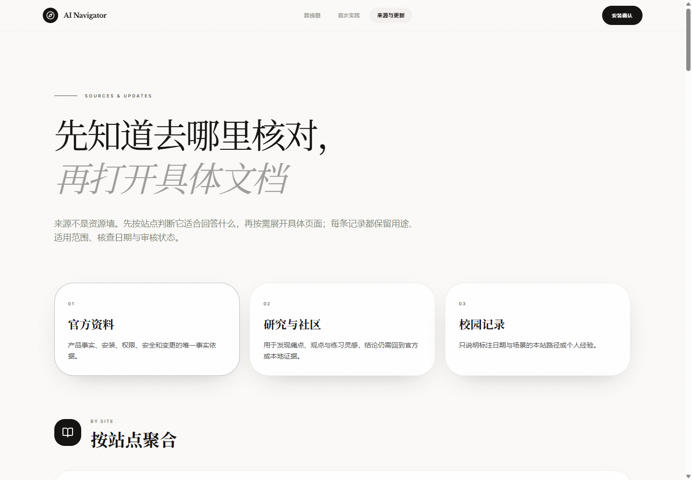

【项目更新】给大学生的 AI 编程上手导航：从“查教程”到“做中生长”
大家好，我把之前做的 AI 编程上手导航站重新整理了一版。
这次不是简单增加几篇教程，而是重新想清楚了一件事：对于刚开始接触 AI 编程的同学，真正缺少的往往不是更多资料，而是一条能马上行动、能判断是否成功、卡住后知道怎么办的路线。
项目地址：https://ai-coding-onboarding-navigator.vercel.app
反馈入口：GitHub Issues
这个网站现在只想回答三个问题：
1. 我现在应该做什么？
2. 怎样才算这一步成功？
3. 如果卡住，下一步怎么继续？
一、先确认工具，再开始行动
进入网站后，第一步不是读长教程，而是确认 Claude Code、Codex 和 WorkBuddy 是否已经安装好。如果已经正常使用过，可以直接继续；如果没有安装或不确定，页面会给出对应的核对资料。

二、不再要求先“学完整套工具”
新版首页把入口改成了一个更直接的问题：你现在想解决什么？可以从一个 20 分钟内能看到结果的小目标开始，让 AI 帮你计划、行动和验证。
- 一个可以打开、运行或复查的产物
- 一份 AI 实际修改范围的说明
- 至少三条自己亲自检查过的证据
- 一条下次可以直接复用的规则

三、首次实践不再是“随便和 AI 聊聊”
网站准备了一组小型实践任务。推荐的第一项是生成一个网页小工具，例如计时器、Todo、单位换算或课程 DDL 提醒。每张任务卡都会写清楚预计时间、开始前的安全边界、需要提供的材料、最终交付物和验收证据。

四、每个任务都有可检查的通过标准
做完后不是只看 AI 说“已经完成”，而是要自己打开页面、检查核心交互、确认修改了哪些文件，并留下至少三条人工验收记录。

说清目标 → 确认边界 → 执行小动作 → 检查证据 → 留下方法
五、把经验留给下一次的自己
新版增加了个人工作流笔记。笔记只保存在当前浏览器，也可以导出为 Markdown。网站不会把本地保存伪装成已经上传或已经提交的反馈。

六、资料不是“资源墙”，事实来源可以追溯
站内涉及安装、权限、安全、配置和产品变化的事实，以 Anthropic、OpenAI 的官方资料为准。来源页按“官方资料、研究与社区、校园记录”分层，并保留用途、适用范围、核查日期和审核状态。

适合哪些同学？
- 想开始 AI 编程，但还没有跑通第一次任务
- 不确定该怎样安全地让 AI 修改文件或运行命令
- 看过不少教程，却不知道自己现在应该做哪一步
- 希望从一次性聊天，逐渐形成可复用工作流
官方文档决定什么是真的；这个网站负责把真实信息组织成一条适合校内同学行动的路线。
目前网站还在持续调整中。如果你愿意体验，欢迎告诉我：你在哪一步停住了、哪一页看不懂，或者哪个验收标准不够明确。